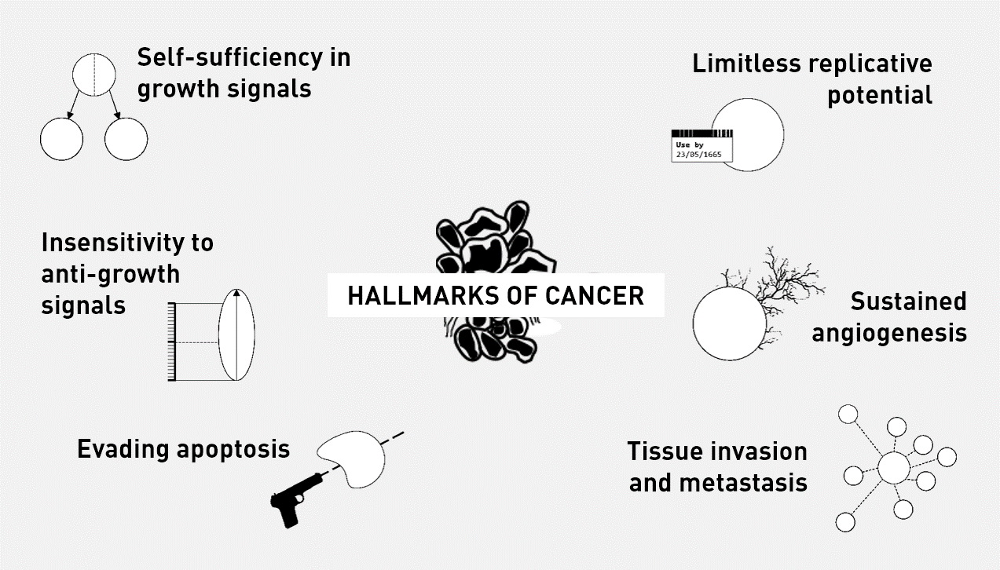

Introduction to Cancer
What is cancer?
Cancer is a disease whereby cells no longer function normally. Cancerous cells no longer respond to signals and are able to grow and divide by themselves. These cells often contain DNA mutations that enable them to bypass control points of regulatory mechanisms. When cells do not grow, divide or die normally, lumps may form. A lump of cells is known as a tumour. Tumours can then be categorised into benign or malignant.
All cancers are tumours but not all tumours are cancers (cancers must be malignant).
Benign tumours are localised to tissues, meaning that they are confined to one area and do not spread to other areas around the body.
Malignant tumours are made up of cells that have the ability to invade the lymph or the bloodstream. They then use these vessels to travel to other parts of the body and form secondary tumours in different tissues. Malignant tumours are known as cancers.


Hallmarks of Cancer
The Hallmarks of Cancer is a peer-reviewed article published in the journal Cell by the cancer researchers Douglas Hanahan and Robert Weinberg. It is considered to be one of the seminal papers regarding cancer and its associated processes. The 2000 paper, which was then revised in 2011, argues that all cancers share six hallmarks that govern the transformation of normal cells to cancer cells:
The papers by Hanahan and Weinberg can be found below: 'Hallmarks of Cancer (2000)' 'Hallmarks of Cancer: The Next Generation' (2011).
Self-sufficiency in growth signals: Normal cells require growth signals to grow and divide. Cancer cells can grow and divide without external growth signals. One example of how this may occur, is when there is a mutation in Ras protein. Normally, Ras is a cytosolic protein that promotes cell proliferation when it is activated. Ras usually stays active for a short period of time. Often, mutations in Ras (later discussed in Section 2: Genetics) that cause it to become constantly active contribute to self-sufficiency. This is because, external signals are no longer needed to activate Ras. Hence, these gain of function mutations act like ‘accelerators’ of cell growth.
Insensitivity to anti-growth signals: The growth of normal cells is kept under control by growth inhibiting signals. Many of these signals converge on the retinoblastoma protein (Rb), which normally prevents inappropriate transition from G1 to S. In other words, it acts as a ‘brake’ to cell growth. If Rb is damaged through a mutation in its gene, or by interference from the human papilloma virus (HPV), the cell can divide uncontrollably. Therefore, it is like the cell loses a brake.
Evading apoptosis: Apoptosis is the process of programmed cell death. It occurs normally during development, for example the loss of webbing between fingers. A key protein involved in the apoptotic process is called p53; it is considered to be the ‘guardian of the genome’ and is activated due to cell injury or DNA damage amongst other things. If p53 is damaged through a mutation in its gene, the cell can bypass the mechanism of apoptosis. The gene encoding p53 is mutated in over 50% of cancers. p53 also acts as a brake on cell proliferation.
Limitless replicative potential: Normal cells die after a certain number of divisions. If Rb or p53 is disabled, the cell can overcome this limit and divide indefinitely, thus becoming immortal.
Sustained angiogenesis: Angiogenesis is the process by which new blood vessels are formed. Normal cells require a good supply of nutrients, such as glucose and oxygen, which are transported in the bloodstream. In cancers, the demand for nutrients outweighs normal supplies. Therefore, in order to grow beyond a certain size, tumour masses must develop a blood supply to supply them with oxygen and other essential nutrients. Cancer cells are able to induce angiogenesis by secreting various growth factors, which then affect surrounding cells.
Tissue invasion and metastasis: Cancer cells can break away from their site of origin to invade surrounding tissue and metastasise to distant body parts. This is the process of EMT, which was discussed earlier.
New hallmarks (from the 2011 paper):
Genome instability and mutation: Cancer cells continuously accumulate mutations and pass these mutations on to daughter cells as they proliferate. Some mutations are problematic, such as the loss of function of tumour suppressor genes and the overactivation of oncogenes. A new form of genomic instability, loss of telomeric DNA, may be associated with chromosomal instability, such as amplification and deletion of chromosomal segments. This further contributes to loss of genomic integrity, allowing tumours to grow.
Tumour-promoting inflammation: Tumours are known to create a pro-inflammatory environment by surrounding themselves with immune cells. Interestingly, one might think these immune cells can destroy the tumour, but research suggests immune cells may actually promote tumour growth. This pro-inflammatory environment is associated with increasing production of molecules/factors that limit cancer cell death, and promote cancer cell growth, angiogenesis, invasion, and metastasis.
Deregulating cellular energetics: Cancer cells switch from aerobic respiration to glycolysis (known as the 'Warburg Hypothesis'). While switching to a less-efficient ATP-producing pathway is counterintuitive, the cancer cells are actually increasing their uptake of glucose for use in metabolic pathways. These metabolic pathways generate new proteins, which are important for promoting tumour growth.
Avoiding immune destruction: This is still heavily researched and up for debate. Experiments suggest that the innate immune system (e.g. NK cells) and adaptive immune system (e.g. CD4 and CD8 T cells) have the potential to decrease tumour incidence and inhibit tumour growth. Cancer cells themselves may secrete other immunosuppressive factors, e.g. TGF-beta, that prevent the immune cells from functioning properly.

Basic Immune Response
The immune system is critical in keeping us healthy, fighting pathogens such as bacteria and viruses. It is divided into two subsystems: the innate immune system and the adaptive immune system.
The innate immune system, found in all plants and animals, provides an immediate but non-specific response to pathogens that are able to successfully enter a host. The first challenge that a pathogen faces are the physical barriers. These include the skin, saliva, mucus, cilia (in the respiratory tract), acid in the stomach, constant movement of the gut contents. Physical barriers assist in preventing the pathogen from binding to cells and therefore, reduce the likelihood of invasion.
The second defence mechanism of the body involves immune cells, known as leukocytes. Specific molecules belonging to bacteria and viruses are recognised leukocytes. Leukocytes then work to eliminate the pathogen and trigger the adaptive immune system. They can recruit other cells to the site of infection by secreting special molecules, which essentially alert the body that there is a pathogen present. Special cells at the site of infection, known as dendritic cells, can take a small part of the pathogen to nearby lymph nodes to stimulate the adaptive response.
![This is a scanning electron microscope image of normal human blood, showing many different cells including red blood cells, white blood cells and lymphocytes. it reflects how complex our immune system is.<br />—<br />SEM blood cells by Bruce Wetzel and Harry Schaefer, National Cancer Institute [Public domain] / <a href="https://creativecommons.org/publicdomain/mark/1.0/">CC-PD-Mark</a>](https://upload.wikimedia.org/wikipedia/commons/thumb/8/82/SEM_blood_cells.jpg/482px-SEM_blood_cells.jpg)
—
SEM blood cells by Bruce Wetzel and Harry Schaefer, National Cancer Institute [Public domain] / CC-PD-Mark
Pathogens that are able to evade the innate immune system then have the challenge of fighting the adaptive immune system. The adaptive immune system provides a delayed but specific response to pathogens. The adaptive immune system comprises of B cells and T cells, which are made in the bone marrow and then migrate to lymph nodes. They are constantly patrolling around the body by circulating within the lymphatic and blood vessels, some reside near mucosal membranes such as the gut where pathogens are likely to enter.
When activated, B cells proliferate and secrete antibodies whilst T cells mediate the immune response. B cells also form a special immune cell known as a memory cell which lives for a long time and gives long term protection against the particular antigen. The video below illustrates the B cell and antibodies in the context of a bacterial infection.
Antibodies: Antibodies are specific for antigens found on pathogens. When they bind to pathogens, antibodies can prevent the pathogen from binding to cells. In other cases, antibodies can neutralise toxins or may prevent pathogens, such as viruses, from being released from cells. However, many pathogens evolve to evade antibody-binding. For example, influenza changes its antibody-binding site so that the antibody made from vaccinations of the previous year can no longer bind. This is why we need to get an influenza vaccination each year.
T cells: There are two types of T cells: T ‘helper’ cells and T ‘killer’ cells. T helper cells travel back to the site of infection and secrete many chemicals that then mediate the immune response. These chemicals may help macrophages kill ingested pathogens or stimulate other immune cells to migrate from the blood to the site of infection. On the other hand, T ‘killer’ cells recognise and kill infected cells.
Natural Killer cells: Natural killer cells are a type of innate immune cell that can recognise abnormally dividing cells and virus infected cells. Once they have recognised these cells and are then activated, natural killer cells then kills these cells directly or by activating apoptosis. They are very important when it comes to cancers as they are the first responders and limit the growth of tumours.
How does cancer change immmune function? In many cancers, the functioning of the host's immune system plays a large role in determining the disease outcome. Cancer cells secrete certain chemicals that disrupt the natural immune response, preventing the infiltration of helper and killer T cells. Tumour cells can recruit inhibitory immune cells to decrease the activation and recruitment of other immune cells. Tumour cells can also prevent other immune cells from seeing ‘antigen’, thereby stopping the activation of these cells.
![This is a super high resolution image of a group of killer T cells (green and red) surrounding a cancer cell (blue, center). To kill the cancer cell, cytotoxic T cells release harmful chemicals (red).<br />—<br />Killer T cells surround a cancer cell by The National Institutes of Health [Public Domain] / <a href="https://creativecommons.org/publicdomain/mark/1.0/">CC-PD-Mark</a>](https://upload.wikimedia.org/wikipedia/commons/a/aa/Killer_T_cells_surround_a_cancer_cell.png)
—
Killer T cells surround a cancer cell by The National Institutes of Health [Public Domain] / CC-PD-Mark